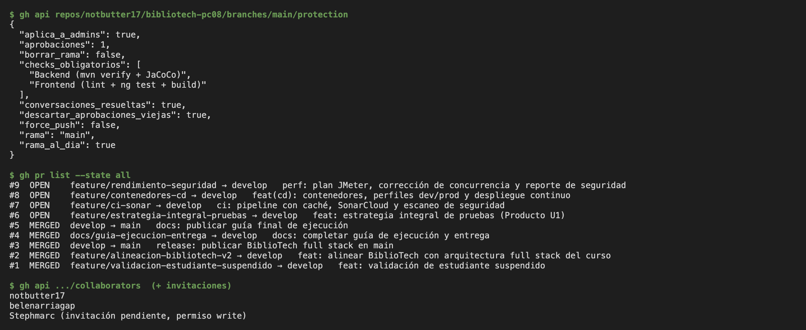
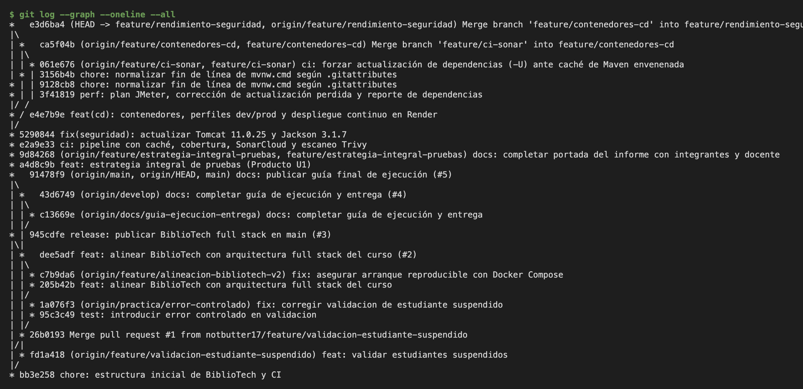
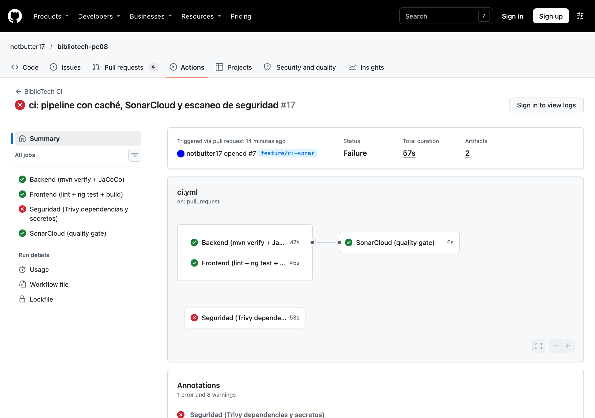
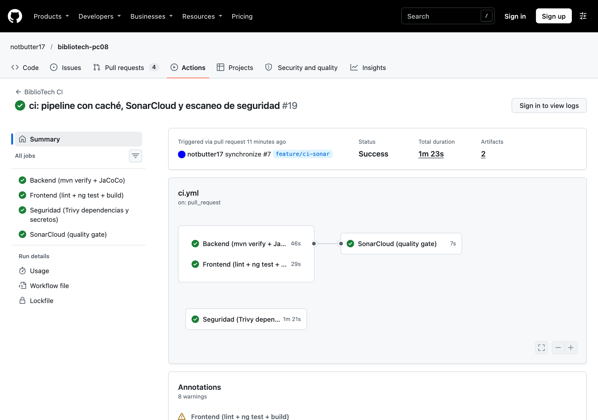
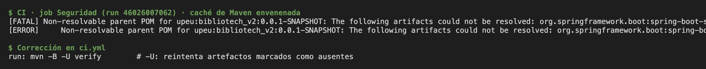
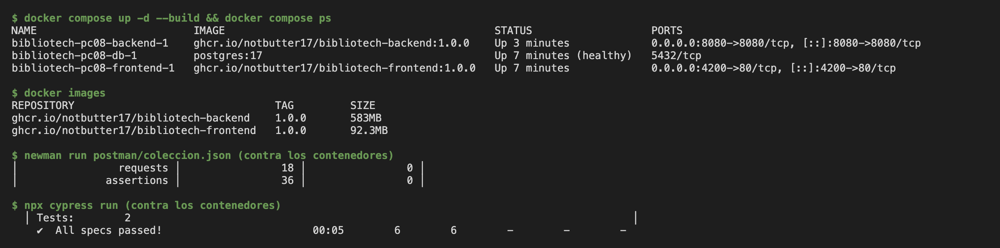
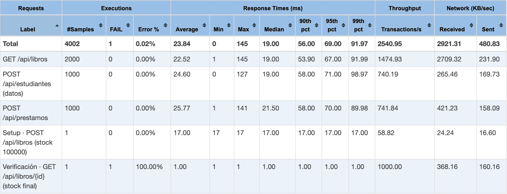
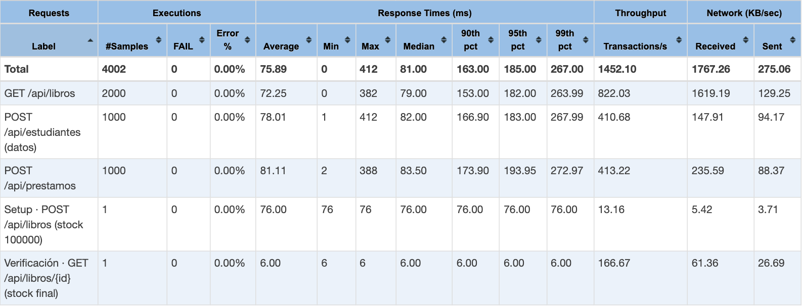
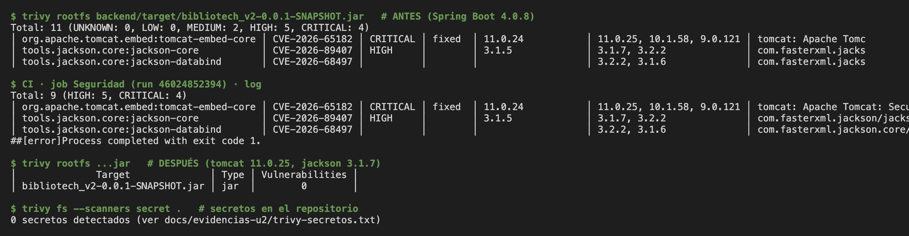

| Etapa | Herramienta | Archivo | Falla el pipeline si… |
|---|---|---|---|
| Control de versiones y revisión | Git, GitHub (PR + protección de rama) | docs/politica-ramas.md | no hay 1 aprobación o los checks no están en verde |
| Compilación y pruebas del backend | Maven, JUnit 5, Mockito, Spring Test, H2, JaCoCo | ci.yml › backend | alguna de las 62 pruebas falla o la cobertura es < 80 % |
| Pruebas del frontend | ESLint, Vitest + TestBed, Angular CLI | ci.yml › frontend | hay errores de lint, falla alguna de las 24 pruebas o falla el build |
| Análisis estático | SonarCloud | ci.yml › sonarcloud, sonar-project.properties | el quality gate no se aprueba |
| Seguridad | Trivy (secretos + CVE), Dependabot | ci.yml › seguridad, dependabot.yml | hay un secreto o una vulnerabilidad HIGH/CRITICAL con parche |
| Imágenes | Docker Buildx, GHCR, metadata-action (semver) | cd.yml › publicar | falla el build multi-stage |
| Despliegue | Render (Blueprint + deploy hook), HTTPS gestionado | cd.yml › desplegar, render.yaml | la prueba de humo HTTPS no recibe 200 |
Git Flow: main (producción, solo por PR desde develop) · develop (integración) · feature/* y fix/* (trabajo aislado). Commits convencionales (feat:, fix:, ci:, perf:, docs:). La versión semántica vive en el archivo VERSION.
Protección de main (aplicada por API, Fig. 2): PR obligatorio con 1 aprobación, se descartan aprobaciones viejas, checks Backend y Frontend obligatorios con la rama al día, conversaciones resueltas, sin force-push ni borrado, y también para administradores.
Criterios para aprobar un PR: (1) CI completo en verde; (2) cada regla nueva tiene su prueba; (3) no hay secretos en el diff; (4) la descripción dice qué cambia y cómo probarlo; (5) no quedan conversaciones abiertas; (6) revisa un integrante distinto del autor.


git log --graph --oneline --all: feature/* → develop → main| PR | Rama → base | Contenido | CI |
|---|---|---|---|
| #6 | feature/estrategia-integral-pruebas → develop | Unidad 1 (base) | ✔ |
| #7 | feature/ci-sonar → develop | CI, SonarCloud, Trivy, Dependabot | ✔ (tras 2 fallas corregidas) |
| #8 | feature/contenedores-cd → develop | Dockerfiles, Compose, perfiles, cd.yml | ✔ |
| #9 | feature/rendimiento-seguridad → develop | JMeter, corrección de concurrencia | ✔ |
| release | develop → main | Versión 1.0.0 | PENDIENTE |
Revisión: los PR #6–#9 esperan la aprobación de belenarriagap / Stephmarc PENDIENTE.
| Job | Qué hace | Caché / artefactos |
|---|---|---|
| Backend (mvn verify + JaCoCo) | mvn -B -U verify: 43 pruebas unitarias y Mockito (Surefire) + 19 de integración (Failsafe, H2) + reporte JaCoCo con regla ≥ 80 %. Publica el % de cobertura en el resumen del run. | caché ~/.m2 (setup-java, clave = hash de pom.xml) · artefacto backend-reportes |
| Frontend (lint + ng test + build) | npm ci, ng lint, ng test --watch=false (24 pruebas, cobertura lcov), ng build de producción | caché npm (package-lock) · artefacto frontend-cobertura |
| SonarCloud (quality gate) | Descarga clases + jacoco.xml + lcov y ejecuta el scanner con sonar.qualitygate.wait=true. Sin SONAR_TOKEN emite un aviso y no analiza. | historial completo (fetch-depth: 0) |
| Seguridad (Trivy) | Escaneo de secretos de todo el repositorio y de CVE HIGH/CRITICAL del jar empaquetado | caché ~/.m2 |


| Falla | Causa | Corrección |
|---|---|---|
| F1 · Seguridad (run 46024852394) | Trivy: Total: 9 (HIGH: 5, CRITICAL: 4) en tomcat-embed-core 11.0.24 y jackson 3.1.5, que trae Spring Boot 4.0.8 | Commit 5290844: tomcat.version=11.0.25 y jackson-bom.version=3.1.7 en el pom; 61 pruebas en verde y nuevo escaneo con 0 CVE |
| F2 · Backend/Seguridad (runs 46024844387, 46026007062) | Non-resolvable parent POM … (absent): un 429 de Maven Central dejó en la caché de Actions el POM padre marcado como ausente, y los jobs que restauraban esa caché fallaban sin reintentar | Commit 061e676: mvn -B -U (fuerza a reconsultar los artefactos ausentes). Los PR #8 y #9 pasaron a verde |
| F3 · histórico (run 44672379220) | Error controlado introducido en la validación de estudiante (práctica de la Sesión 8) | Commit fix: corregir validacion de estudiante suspendido → run 44672559982 en verde |

SonarCloud: el job ya está integrado en el pipeline, pero el análisis requiere el secreto SONAR_TOKEN (cuenta de SonarCloud del equipo) PENDIENTE. En cuanto se registre el token, el job ejecutará el scanner y esperará el quality gate. Configuración: sonar-project.properties (fuentes Java y Angular, cobertura JaCoCo y lcov).
| Etapa 1 (build) | Etapa 2 (ejecución) | Decisiones | |
|---|---|---|---|
| backend/Dockerfile | eclipse-temurin:21-jdk: copia el pom y el wrapper, ejecuta dependency:go-offline (capa en caché mientras el pom no cambie) y luego package -DskipTests | eclipse-temurin:21-jre con solo app.jar, usuario sin privilegios biblio | Las pruebas ya corren en CI; SPRING_PROFILES_ACTIVE=prod; JAVA_OPTS=-XX:MaxRAMPercentage=75 para el plan de 512 MB |
| frontend/Dockerfile | node:22-alpine: npm ci + ng build --configuration production | nginx:1.29-alpine con el dist/ y la plantilla nginx.conf.template | Imagen de 92 MB. nginx sirve Angular y reenvía /api a ${BACKEND_URL}, así el frontend consume el backend por el mismo origen (sin CORS) |
| Variable (.env) | Uso |
|---|---|
DB_NAME, DB_USERNAME | Base y usuario de PostgreSQL; el backend los recibe como DB_* |
DB_PASSWORD | Contraseña: solo en .env (ignorado por git). .env.example lleva cambia_esta_clave |
GHCR_OWNER, VERSION | Nombre de las imágenes ghcr.io/<owner>/bibliotech-*:<versión> |
BACKEND_PORT, FRONTEND_PORT | Puertos publicados (8080 y 4200) |
BACKEND_URL (servicio frontend) | http://backend:8080 en Compose; la URL HTTPS del backend en Render |
Compose: db (postgres:17 con init.sql y healthcheck pg_isready) → backend (depends_on: service_healthy, perfil prod) → frontend. Volumen postgres_data, restart: unless-stopped. docker-compose.release.yml usa las imágenes publicadas en lugar de compilarlas.
Verificado en local: los 3 contenedores en ejecución; Newman 36/36 aserciones y Cypress 6/6 contra los contenedores (entrada por nginx :4200).

docker compose up -d --build, ps, imágenes y suites de la U1 contra los contenedores| Aspecto | Implementación | Estado |
|---|---|---|
| Versionado | SemVer en VERSION (1.0.0). cd.yml etiqueta las imágenes con 1.0.0, latest y sha-<commit>, y crea la etiqueta git v1.0.0. Una etiqueta vX.Y.Z también dispara el workflow | Listo |
| Imágenes publicadas | ghcr.io/notbutter17/bibliotech-backend:1.0.0 y bibliotech-frontend:1.0.0, publicadas al integrar el PR de release en main (con caché de capas type=gha) | PENDIENTE hasta el merge en main |
| Despliegue | Render, plan gratuito: render.yaml crea PostgreSQL + 2 servicios web desde las imágenes. cd.yml llama a los deploy hooks con imgURL=…:1.0.0 y luego hace una prueba de humo sobre https://…/api/libros. HTTPS y certificado gestionados por Render | PENDIENTE hasta crear la cuenta de Render |
| Secretos | GitHub Secrets: SONAR_TOKEN, RENDER_DEPLOY_HOOK_BACKEND, RENDER_DEPLOY_HOOK_FRONTEND. GITHUB_TOKEN automático para GHCR. Las credenciales de la BD las genera Render. Trivy confirma 0 secretos en el repositorio y .env está en .gitignore | 0 secretos en el repo |
| Perfiles Spring | dev: PostgreSQL local, show-sql, DEBUG. prod: DB_HOST/PORT/NAME/USERNAME/PASSWORD sin valores por defecto (si falta uno, no arranca), pool de 5 conexiones, sin stacktrace. Las pruebas usan H2 y el perfil ci usa PostgreSQL en Actions | Listo (prod verificado en Compose) |
BiblioTech corre una instancia por servicio, así que rolling se reduce a reemplazar la única instancia. Canary necesita tráfico suficiente para que un 5 % sea representativo, y una biblioteca universitaria no lo tiene. Con blue-green, la versión nueva (green) arranca en paralelo y Render solo le pasa el tráfico cuando responde el health check (/api/libros). Si falla, la versión anterior (blue) sigue sirviendo, sin caída.
Rollback: (1) automático si green no pasa el health check; (2) en Render → Deploys → Rollback, o llamando al hook con la imagen anterior (imgURL=…:1.0.0), porque las imágenes versionadas son inmutables; (3) git revert del merge → PR → cd.yml publica X.Y.(Z+1). Los cambios de esquema son solo aditivos, así que blue sigue funcionando con la base de green.
Plan performance/bibliotech-plan.jmx:
GET /api/libros.POST /api/estudiantes + POST /api/prestamos; cada iteración usa un estudiante nuevo para no chocar con el límite de 3 préstamos.Se ejecutó contra Docker Compose, entrando por nginx (:4200).
| Escenario | Endpoint | Peticiones | Prom. | p90 | p95 | Máx | % error | req/s | Integridad del stock |
|---|---|---|---|---|---|---|---|---|---|
| Nominal: 50 + 25 usuarios, rampa 10 s | GET /api/libros | 1000 | 2,7 | 5 | 6 | 83 | 0 % | 99,5 | OK |
| POST /api/prestamos | 200 | 5,0 | 8 | 9 | 85 | 0 % | 19,9 | ||
| Estrés: 100 + 100 usuarios, rampa 1 s | GET /api/libros | 2000 | 22,5 | 53 | 67 | 145 | 0 % | 1270,6 | FALLA: 99 633 (esperado 99 000) |
| POST /api/prestamos | 1000 | 25,8 | 58 | 70 | 141 | 0 % | 635,3 | ||
| Estrés tras la corrección | GET /api/libros | 2000 | 72,2 | 153 | 182 | 382 | 0 % | 727,3 | OK: 99 000 |
| POST /api/prestamos | 1000 | 81,1 | 173 | 193 | 388 | 0 % | 363,6 | ||
| Nominal tras la corrección | GET /api/libros | 1000 | 1,7 | 3 | 4 | 55 | 0 % | 98,9 | OK |
| POST /api/prestamos | 200 | 3,3 | 5 | 7 | 15 | 0 % | 19,8 |
Tiempos en ms. Equipo: MacBook (Apple Silicon), Docker Desktop. Reportes HTML en performance/resultados/.


Hallazgo R1 (defecto real): bajo estrés, 1000 préstamos descontaron solo 367 ejemplares. Es una actualización perdida: dos transacciones leen el mismo stock y ambas escriben stock − 1. Ya se había anotado como riesgo H7 en la Unidad 1.
Acción: LibroRepository.findByIdParaActualizar con @Lock(PESSIMISTIC_WRITE) (SELECT … FOR UPDATE) en registrarPrestamo y devolverLibro, más la prueba de regresión prestamosConcurrentes_noPierdenActualizaciones (20 hilos), que sin el bloqueo falla con expected 30 but was 47.
Costo: con 100 usuarios concurrentes sobre el mismo libro, el p95 sube de 70 a 193 ms porque los préstamos se serializan. Con carga nominal no hay impacto (p95 7 ms), y todo queda bajo el SLA de 500 ms.
Hallazgo R2 (riesgo): GET /api/libros no está paginado, así que la respuesta crece con el catálogo. Acción propuesta: paginar con Pageable en la próxima versión (1.1.0).

| # | Librería | CVE | Sev. | Riesgo para BiblioTech | Acción | Resultado |
|---|---|---|---|---|---|---|
| 1–4 | tomcat-embed-core 11.0.24 | CVE-2026-65182, -65637, -65905, -68525 | CRITICAL | Evasión de restricciones, HTTP/2 y bypass de autenticación DIGEST/FORM en el servidor embebido expuesto a Internet | tomcat.version=11.0.25 | Corregido |
| 5–6 | jackson-core 3.1.5 | CVE-2026-89407, -89425 | HIGH | Denegación de servicio con JSON malicioso en POST /api/* | jackson-bom.version=3.1.7 | Corregido |
| 7–9 | jackson-databind 3.1.5 | CVE-2026-68497, -91776, -91777 | HIGH | DoS de CPU y memoria al deserializar los cuerpos de los endpoints | idem | Corregido |
| 10–11 | jackson-databind 3.1.5 | CVE-2026-19032, -83557 | MEDIUM | Resolución de esquemas URI en Path (BiblioTech no deserializa Path) | idem | Corregido |
| 12 | Repositorio completo | Escaneo de secretos | — | Exposición de credenciales | .env en .gitignore; secretos en GitHub Secrets y Render | 0 hallazgos |
Prevención continua: el job Seguridad corre en cada push y bloquea el PR si aparece una vulnerabilidad HIGH/CRITICAL con parche. Dependabot abre PR semanales hacia develop para Maven, npm y Actions. Tras la corrección, las 62 pruebas del backend siguen en verde y la cobertura es de 96,6 % (líneas) y 100 % (ramas).
| Requisito de la guía | Mínimo | Estado |
|---|---|---|
| Flujo Git: develop, feature/*, PR revisados, main protegida | 3 PR | 4 PR abiertos (#6–#9) con CI en verde; main protegida ✔ · aprobación de compañeros PENDIENTE |
| Análisis estático: SonarCloud y quality gate | 1 | Job y configuración listos · SONAR_TOKEN PENDIENTE |
| CI: ci.yml en cada push/PR, mvn verify, ng test, cobertura, caché | 1 workflow | Cumplido, con evidencia de 2 fallas corregidas |
| Dos Dockerfile multi-stage | 2 | Cumplido |
| docker-compose.yml, variables en .env, solo .env.example | 1 | Cumplido (verificado en local) |
| cd.yml publica 2 imágenes con versión | 2 imágenes | Workflow listo · publicación al integrar en main PENDIENTE |
| Despliegue automático con URL pública y HTTPS | 1 | cd.yml + render.yaml listos · cuenta de Render y deploy hooks PENDIENTE |
| Secretos solo en GitHub Secrets; perfiles dev y prod | 0 en el repo | Cumplido (Trivy: 0 secretos) |
| Estrategia de entrega y rollback | 1 | Blue-green documentada |
| Plan JMeter (GET libros, POST préstamos) | 1 plan | Cumplido, con un defecto real hallado y corregido |
| Escaneo de dependencias con tabla y acciones | 1 reporte | Cumplido: 11 CVE corregidos |